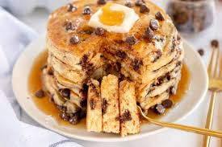

Chocolate Chip Pancakes Recipe

There is something about these chocolate chip pancakes that just reminds you of childhood. It’s an easy, gooey meal that can be topped with whatever you like. When served warm, the chocolate chips melt in your mouth.
This recipe for chocolate chip pancakes is pretty straight-forward. The recipe includes milk and white vinegar, which you combine at the beginning to sour the milk, creating something similar to buttermilk.
Along with the milk mixture, the batter is also made from all-purpose flour, sugar, baking powder and baking soda, eggs, salt, butter, vanilla, and mini chocolate chips. Depending on the sugar content of the chocolate you buy, chocolate will generally be a little bittersweet.
You should definitely top the pancake with a generous slice of butter, as you would any pancake. Maple syrup pairs well with chocolate, but if you are looking to add other topping or ingredients, a little whipped cream works well, as do bananas, fresh berries in the spring, or a cinnamon in the fall.
Ingredients You'll Need:
- 3/4 Cup of Milk
- 2 Tablespoons of White Vinegar
- 1 Cup of All-Purpose Flour
- 2 Tablespoons of White Sugar
- 1 Teaspoon of Baking Powder
- 1/2 Teaspoon of Baking Soda
- 1/4 Teaspoon of Salt
- 1 Large Egg
- 2 Tablespoons of Unsalted Butter, Preferably Melted
- 1 Teaspoon of Vanilla Extract
- 1/2 Cup of Mini Chocolate Chips, or More for Taste
- Cooking Spray or Oil of Some Kind to Keep the Pancakes from Sticking
Step-by-Step Directions:
- Create the Buttermilk: Combine milk and vinegar in a bowl and set aside for 5 minutes to sour the milk.
- Combine flour, sugar, baking powder, baking soda, and salt in a large mixing bowl.
- Whisk egg, butter, and vanilla extract into buttermilk mixture until well combined; add flour mixture and whisk until just combined. Fold in chocolate chips. The pancake batter will be thick. Allow batter to rest for 5 minutes.
- Heat a large skillet over medium-low heat, and coat with cooking spray.
- Pour about 1/4 cup of batter for each pancake onto the skillet. Cook until bubbles appear on the surface, 2 to 4 minutes. Flip pancake with a spatula, and cook until browned on the other side, 2 to 3 more minutes. Repeat with remaining batter. Serve immediately.